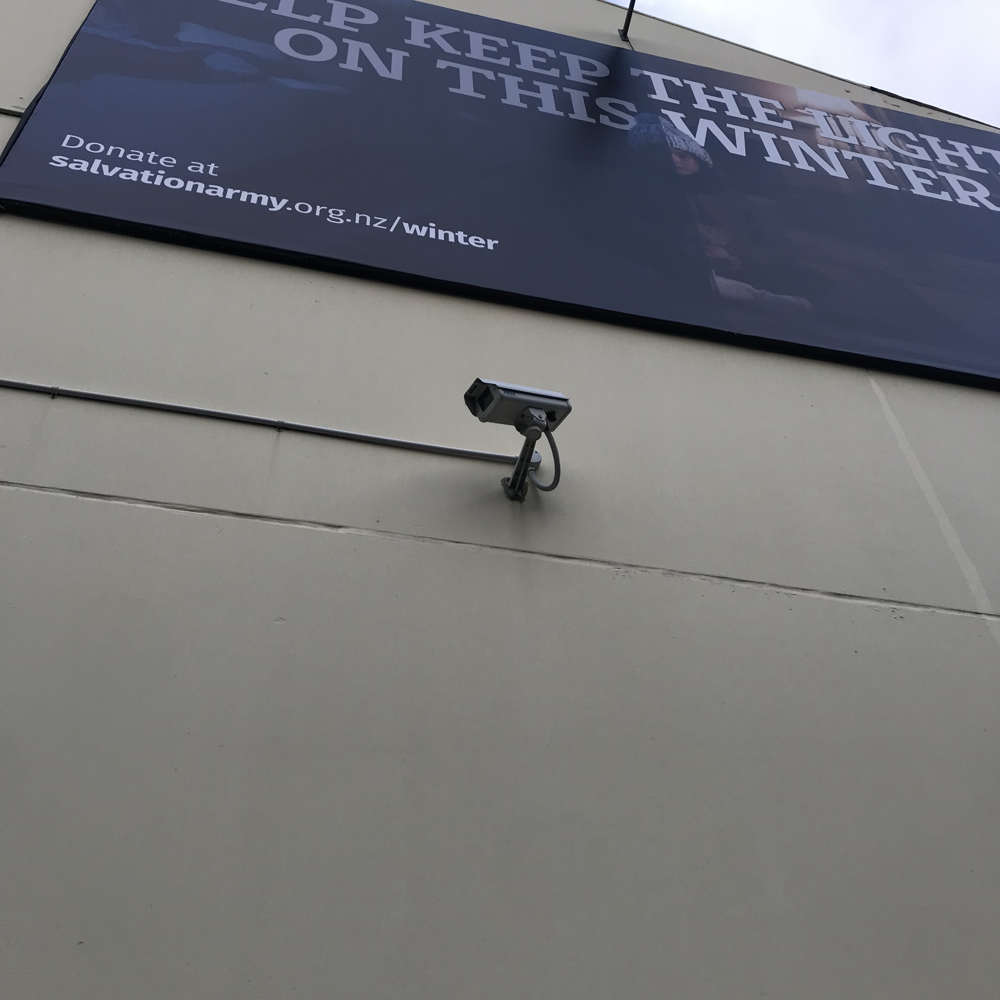

x
Examples in Wellington
This camera is an example of a CCTV camera which is installed for security purposes. These cameras are connected to a closed circuit and record continuous video footage which can be accessed for security purposes.
This is an example of a traffic camera designed to monitor traffic. This information is connected to a larger network which can be accessed by designated people, with some traffic cameras being accessible to the public.

This is an example of red light camera, installed on a set of traffic lights. This is designed to catch evidence in the occurance of a car running a red light. This information is linked to a wider network which can be accessed by people of authorisation.

This is an example of a traffic camera installed by the Mount Victoria tunnel, designed to monitor traffic coming in and out of the tunnel. This information is connected to a larger network which can be accessed by designated people, with some traffic cameras being accessible to the public.